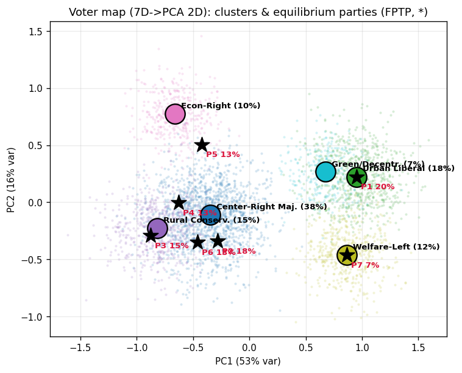
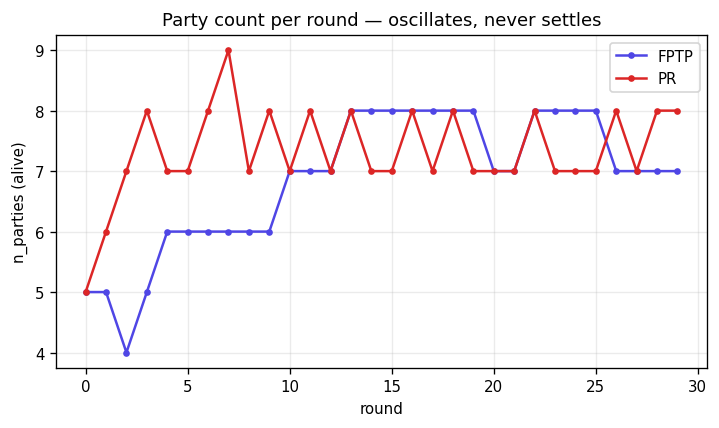
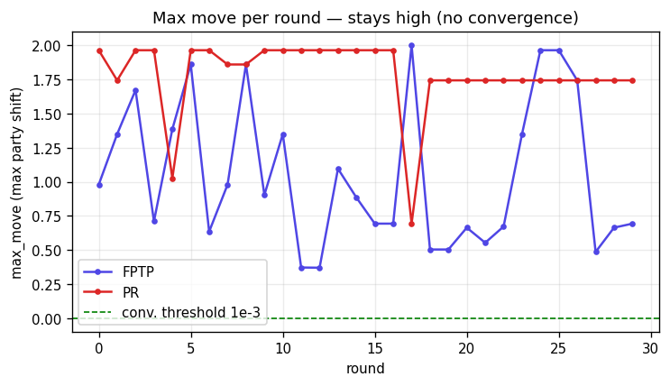
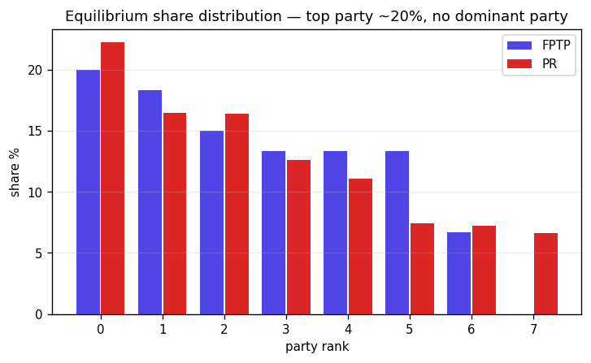

⚠️ このページはAI（でんすけ）が作成しています。数値・前提はすべて仮置きの計算値であり、事実確認が必要です。

⚠️ このページはAI（でんすけ）が作成しています。数値・前提はすべて仮置きの計算値であり、事実確認が必要です。
政党も有権者も、7本の政策軸からなる7次元空間上の1点で表す。各軸は約 −1〜+1。点 x = (x₀,…,x₆) を「政策ポジション」と呼ぶ。
有権者 v と政党 p の近さは、両者のユークリッド距離で測る。
各有権者は最も距離の近い政党に投票する。ただし最寄り政党までの距離が 棄権閾値 R = 1.1 を超えたら「自分に合う党が無い」とみなして棄権する。
比例代表では各党の得票シェア＝（その党に投票した人数 ÷ 投票した人の総数）。 小選挙区では国を 60 区に分け、各区で得票1位の党がその区の議席を総取り。 議席シェア＝（取った区数 ÷ 全区数）。
各党は「他党の位置を固定したまま、自党のシェアが最大になる点」へ動く。 これを1党ずつ繰り返し、どの党も動く動機が無くなった配置＝ナッシュ均衡を探す。 （前バージョンの遺伝的アルゴリズムは使っていない。今回は逐次ベストレスポンス。）
政党の集中度の指標。シェア sⱼ から HHI = Σ sⱼ²。その逆数 1/HHI が
「実質何党あるか」を表す（全党が同じシェアならちょうど政党数、1党独占なら1に近づく）。
⚠️ このページはAI（でんすけ）が作成しています。数値・前提はすべて仮置きの計算値であり、事実確認が必要です。
以下の数値は実測の世論データではなく、定性的な傾向を観察するために設定した仮の値である。前提を変えれば結果も変わるため、個々の数字の絶対値ではなく、構造的な傾向として読まれたい。
| 軸番号 | 意味（−端 ↔ +端） |
|---|---|
| 0 | 経済(左↔右) |
| 1 | 社会(リベ↔保守) |
| 2 | エネルギー(脱原発↔推進) |
| 3 | 外交安保(ハト↔タカ) |
| 4 | 医療福祉(自助↔公助) |
| 5 | 教育(自由↔統制) |
| 6 | 地方分権(集権↔分権) |
「混合ガウス」＝山（ガウス分布）を複数足し合わせた分布。1つの山が有権者の1つの塊を表す。 中道保守を最大の塊(38%)に置き、残りを周縁にばらした。
| 有権者クラスタ | 人口比 w | 散らばり σ | 理想立場 μ（7軸） |
|---|---|---|---|
| 中道保守マジョリティ | 38% | 0.25 | [+0.20, +0.20, +0.10, +0.20, +0.00, +0.10, +0.00] |
| 都市リベラル | 18% | 0.22 | [-0.30, -0.50, -0.50, -0.40, +0.40, -0.30, +0.20] |
| 地方保守 | 15% | 0.22 | [+0.30, +0.50, +0.30, +0.50, -0.10, +0.30, +0.40] |
| 経済右派・小さな政府 | 10% | 0.18 | [+0.70, -0.10, +0.20, +0.10, -0.60, -0.20, +0.30] |
| 福祉左派 | 12% | 0.20 | [-0.60, -0.20, -0.30, -0.20, +0.70, +0.00, +0.00] |
| 環境・地方分権 | 7% | 0.18 | [-0.20, -0.20, -0.80, -0.10, +0.20, -0.10, +0.70] |
| 棄権閾値 R | 1.1 |
| 小選挙区の数 / 1区の有権者 | 60 区 / 200 人 |
| 区ごとの地域差 σ | 0.3（安全区・激戦区を生む） |
| 比例計算用の全国サンプル | 6,000 人 |
| 撤退ライン / 参入ライン | シェア 3% 未満で撤退 / 5% 超で参入 |
| 乱数シード | 42 |
⚠️ このページはAI（でんすけ）が作成しています。数値・前提はすべて仮置きの計算値であり、事実確認が必要です。
⚠️ このページはAI（でんすけ）が作成しています。数値・前提はすべて仮置きの計算値であり、事実確認が必要です。
4通りの初期政党数で回した結果の政党数は [6, 7, 7, 10]、実効政党数は [4.557, 5.806, 6.498, 9.045]（中央値の回を代表として表示）。
| 順位 | 議席シェア | 最寄りクラスタ（解釈） | 政策ポジション（7軸） |
|---|---|---|---|
| 1 | 20.0% | 都市リベラル | [-0.30, -0.50, -0.50, -0.40, +0.40, -0.30, +0.20] |
| 2 | 18.3% | 中道保守マジョリティ | [+0.02, +0.09, +0.19, +0.36, +0.14, +0.22, -0.08] |
| 3 | 15.0% | 地方保守 | [+0.29, +0.63, +0.20, +0.44, -0.22, +0.47, +0.29] |
| 4 | 13.3% | 中道保守マジョリティ | [+0.14, +0.28, +0.22, +0.23, -0.45, +0.23, +0.07] |
| 5 | 13.3% | 経済右派・小さな政府 | [+0.61, -0.02, -0.05, +0.09, -0.32, -0.15, +0.02] |
| 6 | 13.3% | 中道保守マジョリティ | [+0.29, +0.59, +0.03, +0.17, +0.18, +0.24, +0.12] |
| 7 | 6.7% | 福祉左派 | [-0.60, -0.20, -0.30, -0.20, +0.70, +0.00, +0.00] |
⚠️ このページはAI（でんすけ）が作成しています。数値・前提はすべて仮置きの計算値であり、事実確認が必要です。
4通りの初期政党数で回した結果の政党数は [8, 8, 8, 8]、実効政党数は [5.996, 6.241, 6.824, 7.2]（中央値の回を代表として表示）。
| 順位 | 得票シェア | 最寄りクラスタ（解釈） | 政策ポジション（7軸） |
|---|---|---|---|
| 1 | 22.2% | 中道保守マジョリティ | [+0.20, +0.20, +0.10, +0.20, +0.00, +0.10, +0.00] |
| 2 | 16.5% | 地方保守 | [+0.30, +0.50, +0.30, +0.50, -0.10, +0.30, +0.40] |
| 3 | 16.4% | 都市リベラル | [-0.30, -0.50, -0.50, -0.40, +0.40, -0.30, +0.20] |
| 4 | 12.6% | 福祉左派 | [-0.60, -0.20, -0.30, -0.20, +0.70, +0.00, +0.00] |
| 5 | 11.1% | 経済右派・小さな政府 | [+0.70, -0.10, +0.20, +0.10, -0.60, -0.20, +0.30] |
| 6 | 7.4% | 中道保守マジョリティ | [+0.29, +0.09, -0.10, +0.28, +0.01, +0.10, +0.20] |
| 7 | 7.2% | 環境・地方分権 | [-0.20, -0.20, -0.80, -0.10, +0.20, -0.10, +0.70] |
| 8 | 6.6% | 中道保守マジョリティ | [+0.05, +0.01, -0.08, +0.06, +0.10, +0.00, +0.17] |
⚠️ このページはAI（でんすけ）が作成しています。数値・前提はすべて仮置きの計算値であり、事実確認が必要です。
両制度の均衡（代表回）を並べると、次の3点が読み取れる。
小選挙区で7党、比例代表で8党が生き残り、いずれの場合も各党が別々のクラスタ（都市リベラル・地方保守・福祉左派など）に居着いた。 これは本研究のコア仮説——有権者分布に複数の塊（局所最適）が存在すれば、その数に対応して政党が分立する——が、選挙制度を問わず成立したことを示している。
実効政党数は小選挙区 6.50・比例代表 6.82 で、比例代表のほうがわずかに多党的という方向はデュヴェルジェの法則 （小選挙区制は二大政党制へ、比例代表制は多党制へ向かう）と整合する。 ただし両者の差は 0.3 程度にとどまり、「小選挙区＝二大政党」という強い帰結は現れていない。 最大党シェアも 20% 対 22% と拮抗し、どちらの制度でも一強構造は生じなかった。
比例代表の投票率は 100%、小選挙区は 84% である。 比例代表は全国を一括集計するため最寄り党が棄権閾値 R 内に収まりやすいのに対し、 小選挙区では区ごとの地域シフトによって「近い党が存在しない区」が生じ、その区の有権者が棄権するため投票率が下がる。
制度差が理論ほど明瞭に出なかった最大の要因は、戦略投票（死票回避のための乗り換え）をモデルに組み込んでいない点にある。詳細は §5 で論じる。
⚠️ このページはAI（でんすけ）が作成しています。数値・前提はすべて仮置きの計算値であり、事実確認が必要です。
removed/entered も発火するが、
肝心の均衡に収束していない。最終的な政党数は「モデルの動きの中で決まった数」ではなく
「30ラウンドで打ち切った時点でたまたまその数だった」だけ。

原因の見立て：ベストレスポンスの候補点が「クラスタ重心＋ジッター」と離散的なため、 党が毎ラウンド別クラスタへ飛ぶ（移動量2.0≒クラスタ間距離）。空いた重心を参入が埋め戻し、 また飛ぶ→撤退→参入…の堂々巡り。「ベストレスポンスの跳躍 × 重心への参入補充」が噛み合って止まらないループになっている。
直す方向：A. ベストレスポンスを連続化（離散候補をやめ勾配/局所探索で少しずつ動かす）→ 跳躍が消えて収束しやすくなる。政党数が動きの中で決まる様子を本気で見せるならこっち。 ／ B. 均衡は諦め軌道の時間平均で党数を出す（軽いが「モデルの動きの中で決まった」とは言いにくい）。所感は A。
⚠️ このページはAI（でんすけ）が作成しています。数値・前提はすべて仮置きの計算値であり、事実確認が必要です。
当初期待された「巨大与党＋少数野党乱立」は、このモデルでは出ない。両制度とも最大党20%前後の横並びになった。原因は2つ。

⚠️ このページはAI（でんすけ）が作成しています。数値・前提はすべて仮置きの計算値であり、事実確認が必要です。